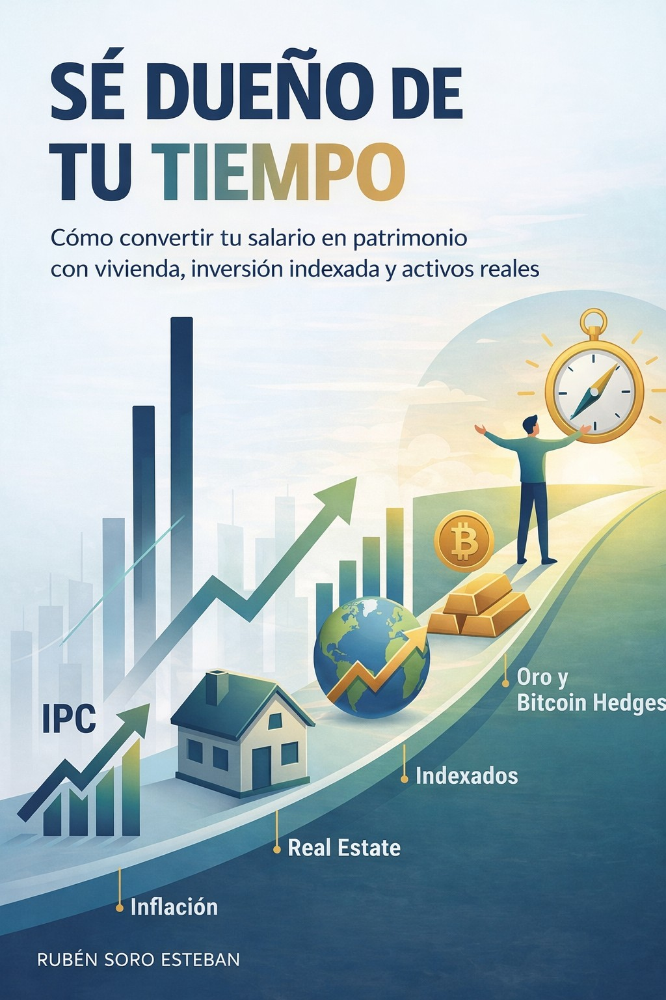

Sé dueño de tu tiempo
Cómo convertir tu salario en patrimonio con vivienda, inversión indexada y activos reales
Trabajas. Ahorras. Cumples.
Y aun así sientes que el dinero nunca termina de darte libertad.
Este libro no va de hacerse rico rápido.
Va de algo mucho más importante: dejar de cambiar tu tiempo por dinero para empezar a construir patrimonio de verdad.
Durante años nos han enseñado a estudiar, trabajar, ahorrar y confiar.
Confiar en que el sueldo subirá.
Confiar en que la pensión llegará.
Confiar en que ahorrar en el banco es prudente.
Confiar en que ya “algún día” invertiremos.
Pero mientras tanto, la inflación erosiona, el tiempo pasa y la mayoría sigue atrapada en un sistema en el que trabaja duro… sin llegar a ser dueña de su vida.
Sé dueño de tu tiempo es una guía práctica y directa para entender cómo funciona realmente el dinero y cómo usarlo para construir libertad.
En este libro aprenderás:
— por qué ahorrar sin estrategia puede hacerte perder poder adquisitivo;
— cómo pensar en términos de patrimonio y no solo de salario;
— cuándo la deuda puede ser una herramienta útil y cuándo se convierte en una trampa;
— cómo utilizar la vivienda y los inmuebles con sentido patrimonial;
— cómo empezar a invertir en fondos indexados de forma sencilla;
— qué papel pueden jugar la renta fija, el oro o Bitcoin dentro de una estrategia coherente;
— cómo diseñar una asignación de activos adaptada a tus objetivos;
— cómo tomar mejores decisiones financieras en pareja;
— y, sobre todo, cómo transformar tus ingresos en activos que trabajen por ti.
Este no es un libro neutro ni complaciente.
Es un libro con tesis, con criterio y con vocación práctica.
Si estás cansado de limitarte a trabajar, pagar y esperar, aquí encontrarás una hoja de ruta para empezar a construir algo mucho más valioso que dinero:
control sobre tu tiempo.
